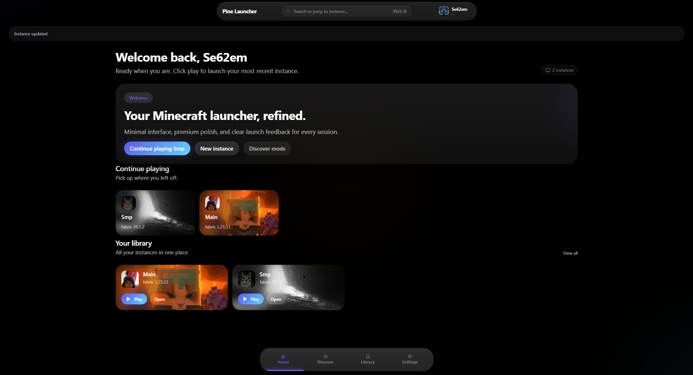

Every world, neatly separated.
Keep versions, loaders, mods, saves, and settings isolated in clean instances.
NeoForge 47 modsVanilla 1.21.8Fabric+ 14 mods
Create instances, discover content, and launch every version with the right Java runtime—without the usual setup headache.
Version 1.2.3 Windows 10/11 · Debian · Arch Linux
Pine takes care of the fiddly parts so your attention stays on the game.
Keep versions, loaders, mods, saves, and settings isolated in clean instances.
Find and install mods, resource packs, shaders, and modpacks through Modrinth.
Pine keeps verified game assets, libraries, version files, and mods in shared caches. New instances reuse matching files instead of downloading everything from scratch.
Every official installer includes a published SHA-256 checksum so you can verify the downloaded file before running it.
View the latest GitHub releaseSee how Pine is built, report issues, follow releases, or get help from the community.
Creator and maintainer of Pine Launcher. I built Pine to make managing Minecraft instances feel simpler, cleaner, and a little more personal.
Choose the package made for your computer.
apt install ./package.deb or pacman -U ./package.pacman.Pine is currently unsigned because trusted Windows signing certificates are paid products. Verify the checksum shown above against the checksum published with the GitHub release before running it. You should never need to disable your antivirus.